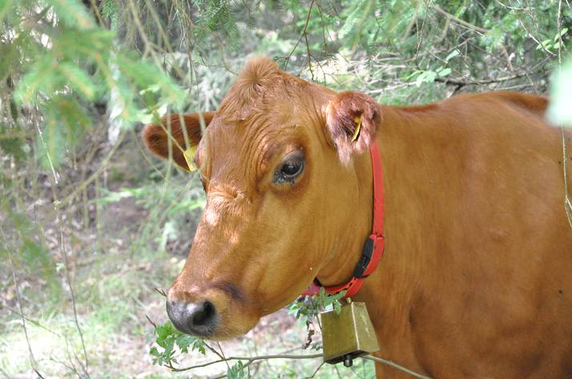

<!--
      <div class="jumbotron">
        <p>
        
        </p>
      </div>
-->

      <div class="row-fluid marketing">
        <div class="span12">
        
<h4>Länkar</h4>
<p>Scan har en otroligt bra köttguide där man bland annat kan läsa om olika styckningsdetaljer.
<a href="http://www.scan.se/kottguiden">Till Scan</a>
</p>

<br>

<h4>Varför lantraskött</h4>
<p>
Vår idé för att skapa hemsidan för <a href="http://www.lantraskott.se">Lantraskött (www.lantraskott.se) </a> utgår från tanken
att det för att kunna långsiktigt bevara våra producerande lantraser måste finnas en
efterfrågan på deras kött. Det är nödvändigt för dem som håller sina producerande
lantraser för mer än husbehov, att kunna sälja sitt överskott på ett enkelt och smidigt
sätt. Det är också nödvändigt för allt hållande av sådana lantraser att det finns en
kundkrets som vet om att det finns tillgång till sådant speciellt kött. Kött från våra
långsamtväxande lantraser hinner utveckla en fylligare och mera mogen smak än
kött från snabbväxande korsningsraser. Eftersom våra lantraser är anpassade till
naturliga fodervaror och ett lugnare liv skall de också hållas på gårdar med ekologisk
produktion för att få vara länkade till denna hemsida. Djuren skall leva, slaktas
och ätas inom närområdet, som idag ofta definieras som ett område inom 15 mils
radie. De lantbrukare som har lantrasdjur har ofta en småskalig verksamhet i våra
skogsbygder, varför de också är viktiga för att bevara ett levande landskap i sådana
bygder.
</p>


        </div>
      </div>


